Assembly
GEAR-TRAIN AND DIRECT CLUTCH ASSEMBLY1. Soak direct clutch and overdrive clutch discs in MOPAR ATF+4 transmission fluid. Allow discs to soak for 10 - 20 minutes.
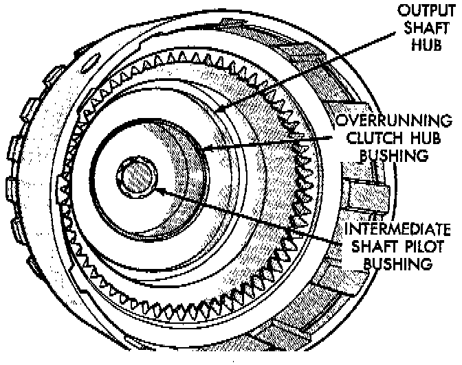
2. Install new pilot bushing and clutch hub bushing in output shaft if necessary. Lubricate bushings with petroleum jelly, or transmission fluid
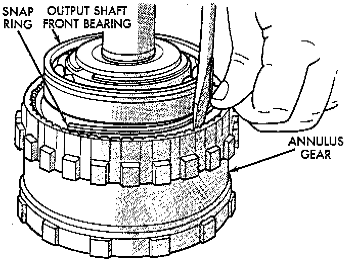
3. Install annulus gear on output shaft, if removed. Then install annulus gear regaining snap ring.
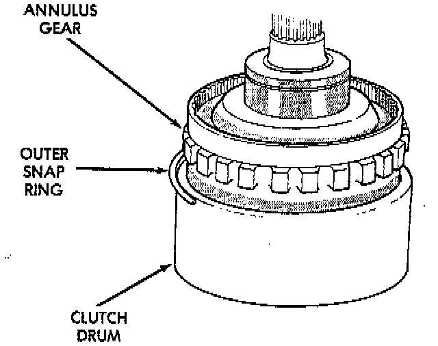
4. Align and install clutch drum on annulus gear. Be sure drum is engaged in annulus gear lugs.
5. Install clutch drum outer retaining ring.
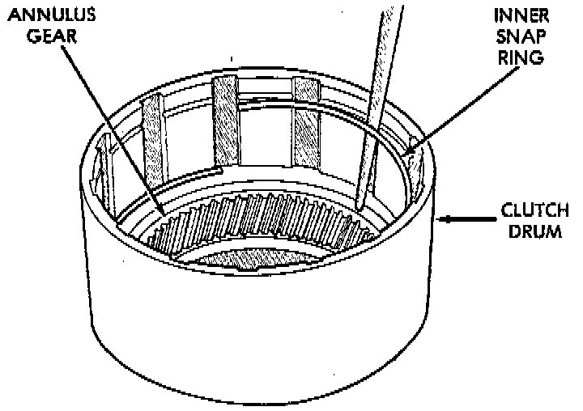
6. Slide clutch drum forward and install inner retaining ring.
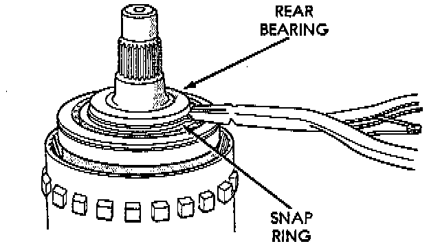
7. Install rear bearing and snap ring on output shaft. Be sure locating ring groove in bearing is toward rear.
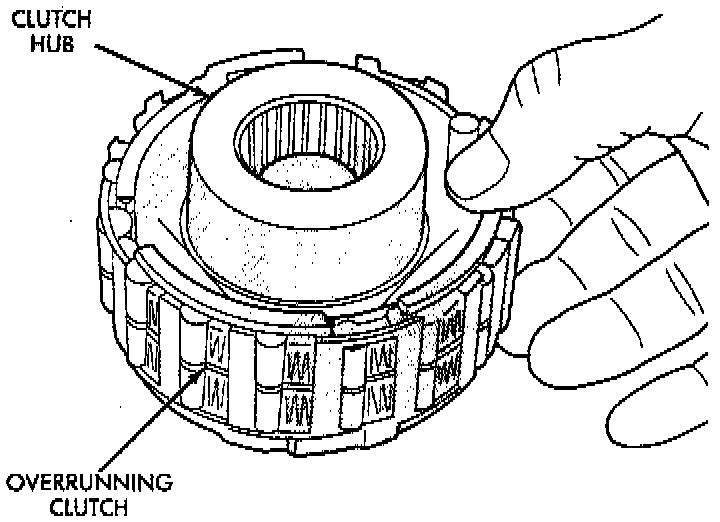
8. Install overrunning clutch on hub. Note that clutch only fits one way. Shoulder on clutch should seat in small recess at edge of hub.
9. Install thrust bearing on overrunning clutch hub. Use generous amount of petroleum jelly to hold bearing in place for installation. Bearing fits one way only. Be sure bearing is seated squarely against hub. Reinstall bearing if it does not seat squarely.
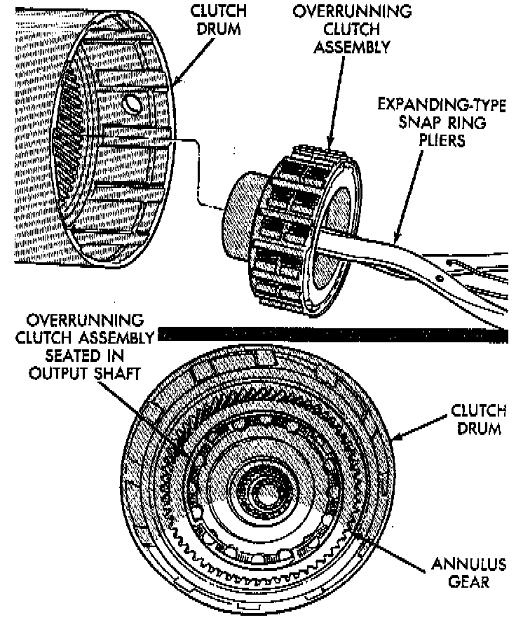
10. Install overrunning clutch in output shaft. Insert snap ring pliers in hub splines. Expand pliers to grip hub. Then install assembly with counterclockwise, twisting motion.
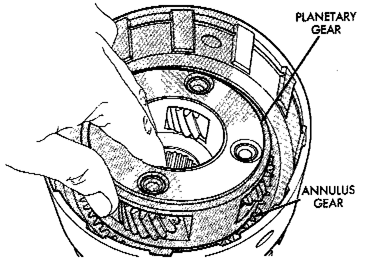
11. Install planetary gear in annulus gear. Be sure planetary pinions are fully seated in annulus near before proceeding.
12. Coat planetary thrust bearing and bearing contact surface of spring plate with generous amount of petroleum jelly. This will help hold bearing in place during installation.
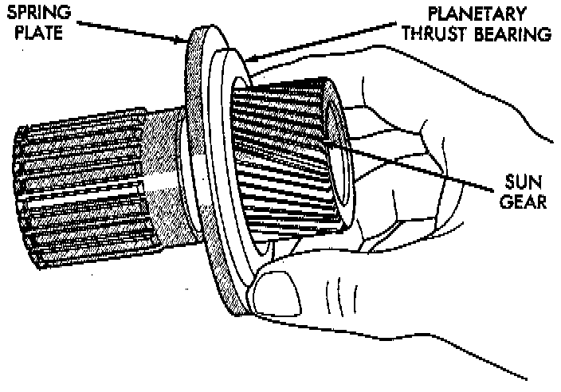
13. Install planetary thrust bearing on sun gear. Slide bearing onto gear and seat it against spring plate as shown. Bearing fits one way only. If it does not seat squarely against spring plate, remove and reposition bearing.
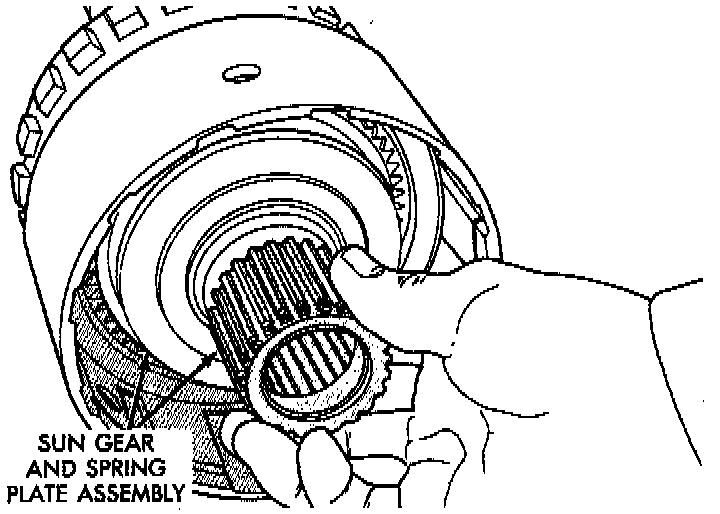
14. Install assembled sun gear, spring plate and thrust bearing. Be sure sun gear and thrust bearing are fully seated before proceeding.
15. Mount assembled output shaft, annulus gear, and clutch drum in shop press. Direct clutch spring, hub and clutch pack are easier to install with assembly mounted in press.
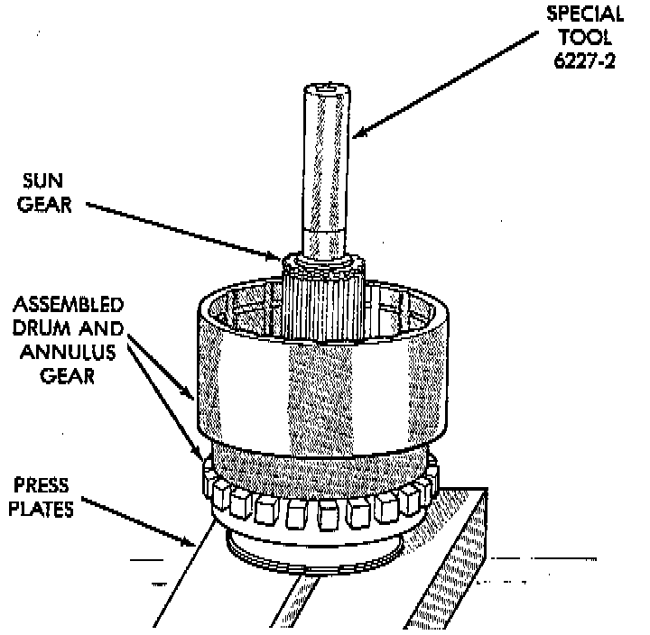
16. Align splines in hubs of planetary gear and overrunning clutch with Alignment tool 6227-2, or equivalent. Insert tool through sun gear and into splines of both hubs. Be sure alignment tool is fully seated before proceeding.
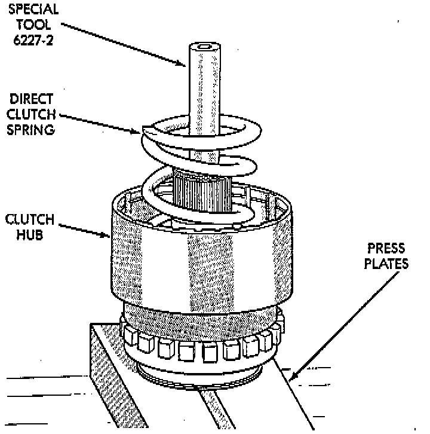
17. Install direct clutch spring. Be sure spring is properly seated on spring plate.
NOTE: The 42RE transmission has 6 direct clutch discs and 5 clutch plates.
18. Assemble and install direct clutch pack on hub as follows:
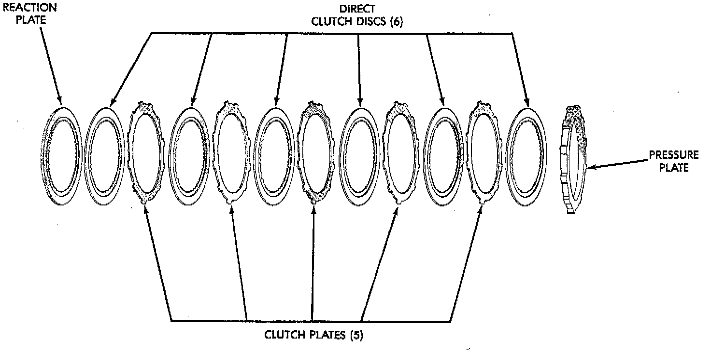
a. Assemble clutch pack components.
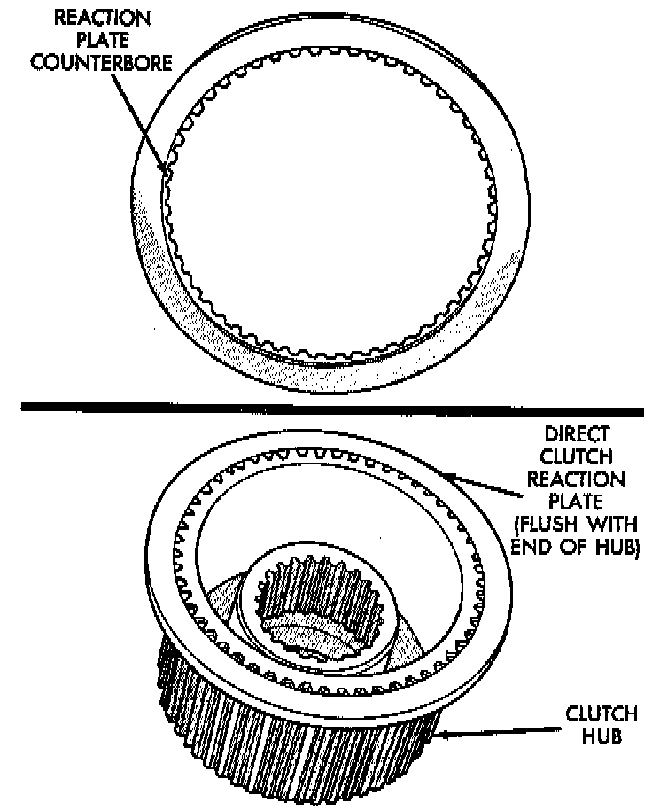
b. Install direct clutch reaction plate on clutch hub first. Note that one side of reaction plate is counterbored. Be sure this side faces rearward. Splines at rear of hub are raised slightly. Counterbore in plate fits over raised splines. Plate should be flush with this end of hub.
c. Install first clutch disc followed by a steel plate until all discs and plates hake been installed.
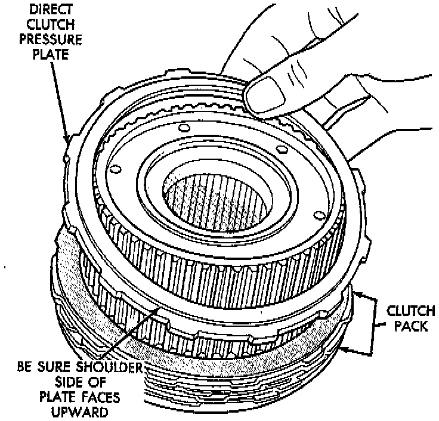
d. Install pressure plate. This is last clutch pack item to be installed. Be sure plate is installed with shoulder side facing upward.
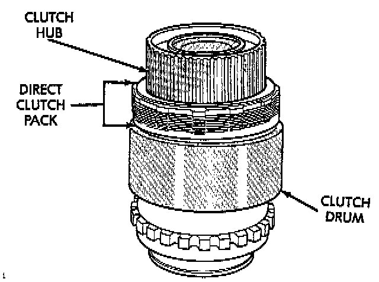
19. Install clutch hub and clutch pack on direct clutch spring. Be sure hub is started on sun gear splines before proceeding.
WARNING: The next step in gear-train assembly involves compressing the direct clutch hub and spring. It is extremely important that proper equipment be used to compress the spring as spring force is approximately 830 pounds. Use compressor tool C-6227-1 and a hydraulic-type shop press with a minimum ram travel of 6 inches. The press must also have a bed that can be adjusted up or down as required. Release clutch spring tension slowly and completely to avoid personal injury.
20. Position Compressor Tool 6227-1, or equivalent on clutch hub.
21. Compress clutch hub and spring just enough to place tension on hub and hold it in place.
22. Slowly compress clutch hub and spring. Compress spring and hub only enough to expose ring grooves for clutch pack snap ring and clutch hub retaining ring.
23. Realign clutch pack on hub and seat clutch discs and plates in clutch drum.
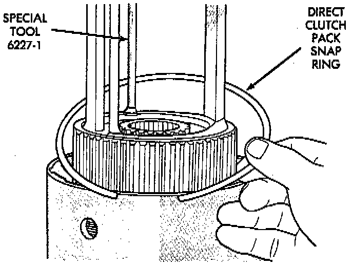
24. Install direct clutch pack snap ring. Be very sure snap ring is fully seated in clutch drum ring groove.
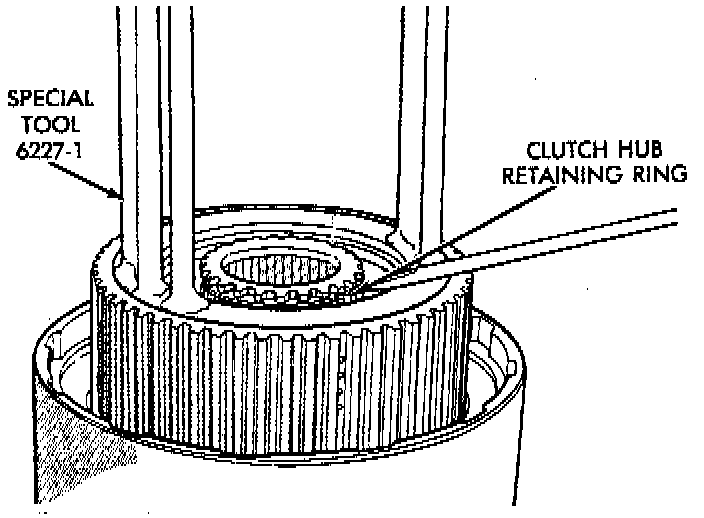
25. Install clutch hub retaining ring. Be very sure retaining ring is fully seated in sun gear ring groove.
26. Slowly release press ram, remove compressor tools and remove gear-train assembly.
GEAR CASE ASSEMBLY
1. Position park pawl and spring in case and install park pawl shaft. Verify that end of spring with 90° bend is hooked to pawl and straight end of spring is seated against case.
2. Install pawl shaft retaining bolt. Tighten bolt to 27 Nm (20 ft. lbs.) torque.
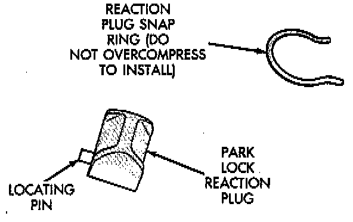
3. Install park lock reaction plug. Note that plug has locating pin at rear. Be sure pin is seated in hole in case before installing snap ring.
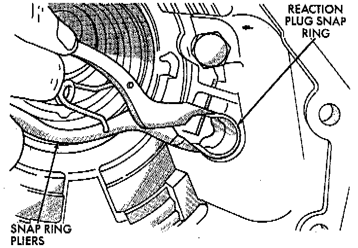
4. Install reaction plug snap-ring. Compress snap ring only enough for installation; do not distort it.
5. Install new seal in gear case. Use Tool Handle C-4171 and Installer C-3860-A, or equivalents to seat seal in case.
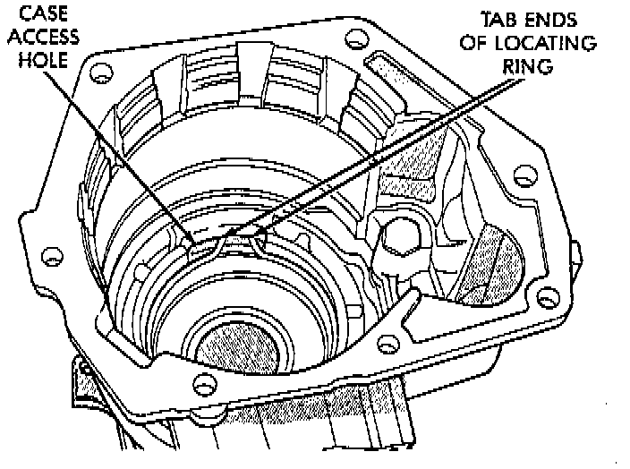
6. Verify that tab ends of rear bearing locating ring extend into access hole in gear case.
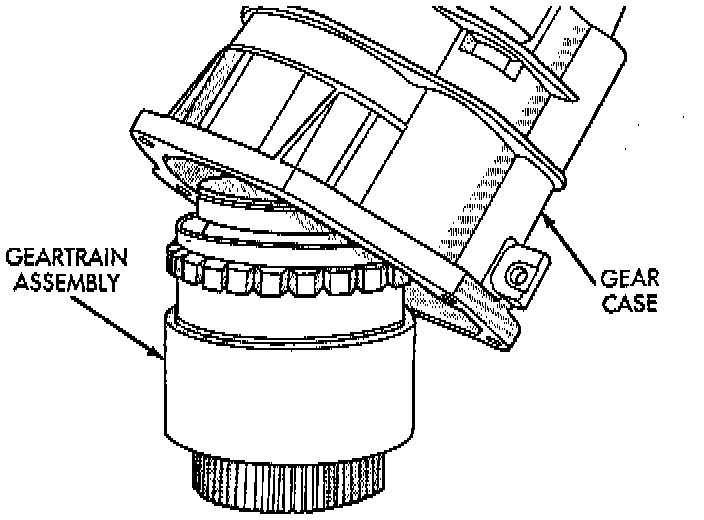
7. Support gear-train on Tool 6227-1, or equivalent. Be sure tool is securely seated in clutch hub.
8. Install overdrive gear case on gear-train.
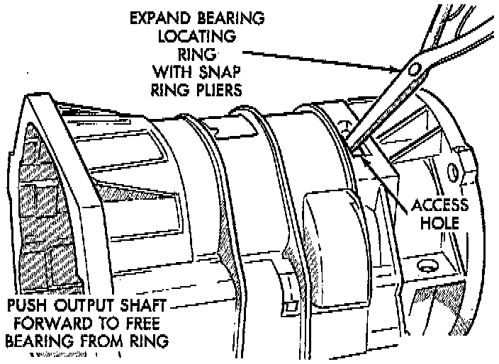
9. Expand front bearing locating ring with snap ring pliers. Then slide case downward until locating ring locks in bearing groove and release snap ring.
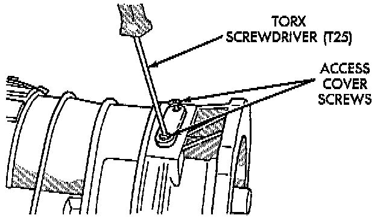
10. Install locating ring access cover and gasket in overdrive unit case.
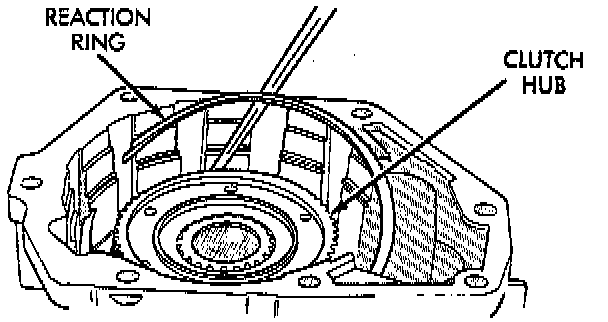
OVERDRIVE CLUTCH ASSEMBLY
1. Install overdrive clutch reaction ring first. Reaction ring is flat with notched ends.
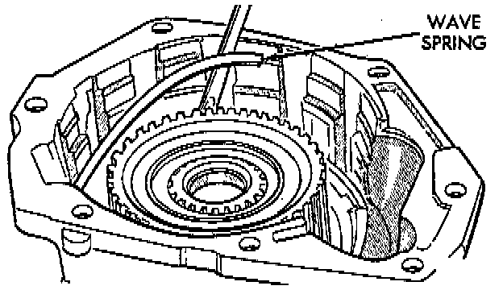
2. Install wave spring on top of reaction ring. Reaction ring and wave ring both fit in same ring groove. Use screwdriver to seat each ring securely in groove. Also ensure that the ends of the two rings are offset from each other.
NOTE: The 42RE transmission has 3 overdrive clutch discs and 2 plates.
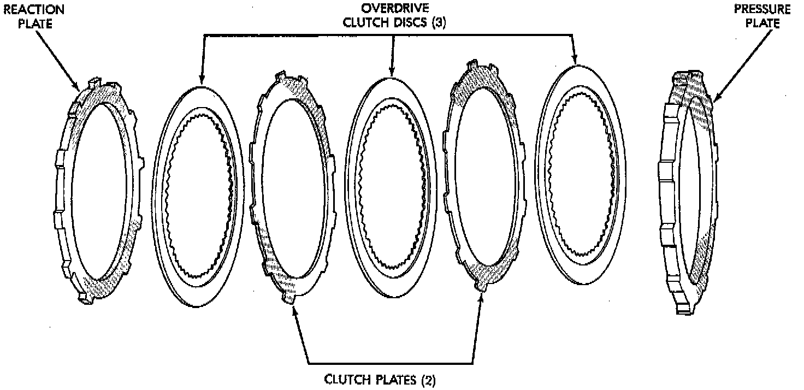
3. Assemble overdrive clutch pack.
4. Install overdrive clutch reaction plate first.
5. Install first clutch disc followed by first clutch plate. Then install remaining clutch discs and plates in same order.
6. Install clutch pack pressure plate.
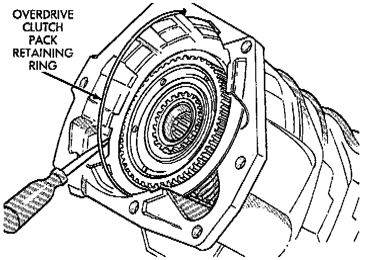
7. Install clutch pack wire-type retaining ring.
INTERMEDIATE SHAFT SPACER SELECTION
1. Place overdrive unit in vertical position. Mount it on blocks, or in workbench with appropriate size mounting hole cut into it. Be sure unit is facing upward for access to direct clutch hub. Also be sure output shaft is not loaded and internal components are moved rearward for accurate measurement.
2. Determine correct thickness intermediate shaft spacer as follows:
a. Insert Special Tool 6312, or equivalent through sun gear, planetary gear and into pilot bushing in output shaft. Be sure tool bottoms against planetary shoulder.
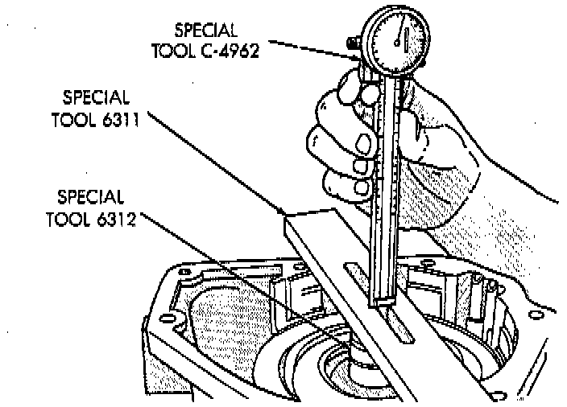
b. Position Gauge Tool 6311, or equivalent across face of overdrive case. Then position Dial Caliper C-4962, or equivalent over gauge tool.
c. Extend sliding scale of dial caliper downward through gauge tool slot until scale contacts end of Gauge Alignment Tool 6312, or equivalent. Lock scale in place. Remove dial caliper tool and note distance measured.
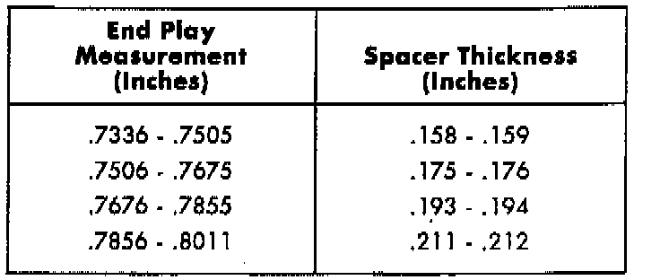
d. Select proper thickness end play spacer from spacer chart based on distance measured.
e. Remove Gauge Alignment Tool 6312, or equivalent.
OD THRUST PLATE SELECTION
1. Place overdrive unit in vertical position. Mount it on blocks, or in workbench with appropriate size mounting hole cut into it. Be sure unit is facing upward for access to direct clutch hub. Also be sure output shaft is not loaded and internal components are moved rearward for accurate measurement.
2. Determine correct thickness overdrive piston thrust plate as follows:
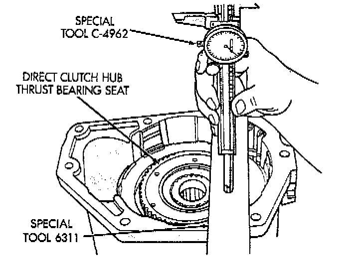
a. Position Gauge Tool 6311, or equivalent across face of over drive case. Then position Dial Caliper C-4962, or equivalent over gauge tool.
b. Measure distance to clutch hub thrust bearing seat at four points 90° apart. Then average measurements by adding them and dividing by 4.
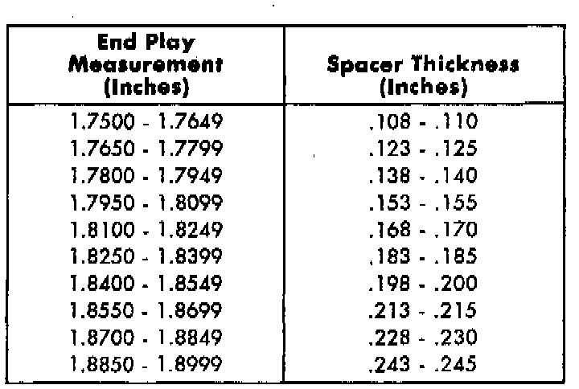
c. Select and install required thrust plate from information in thrust plate chart.
3. Leave Alignment Tool 6227-2, or equivalent in place. Tool will keep planetary and clutch hub splines in alignment until overdrive unit is ready for installation on transmission.
4. Transmission speed sensor can be installed at this time if desired. However, it is recommended that sensor not be installed until after overdrive unit is secured to transmission.
OVERDRIVE PISTON ASSEMBLY
1. Install new seals on over drive piston.
2. Stand transmission case upright on bellhousing.
3. Position Guide Ring 8114-1, or equivalent on outer edge of overdrive piston retainer.
4. Position Seal Guide 8114-2, or equivalent on inner edge of overdrive piston retainer.
5. Install overdrive piston in overdrive piston retainer by: aligning locating lugs on overdrive piston to the two mating holes in retainer.
a. Aligning locating lugs on overdrive piston to the two mating holes in retainer.
b. Lubricate overdrive piston seals with MOPAR Door Ease, or equivalent.
c. Install piston over Seal Guide 8114-2 and inside Guide Ring 8114-1, or equivalents.
d. Push overdrive piston into position in retainer.
e. Verify that the locating lugs entered the lug bores in the retainer.
6. Install intermediate shaft spacer on intermediate shaft.
7. Install overdrive piston thrust plate on overdrive piston.
8. Install overdrive piston thrust bearing on overdrive piston.

9. Install transmission speed sensor and O-ring seal in overdrive case.